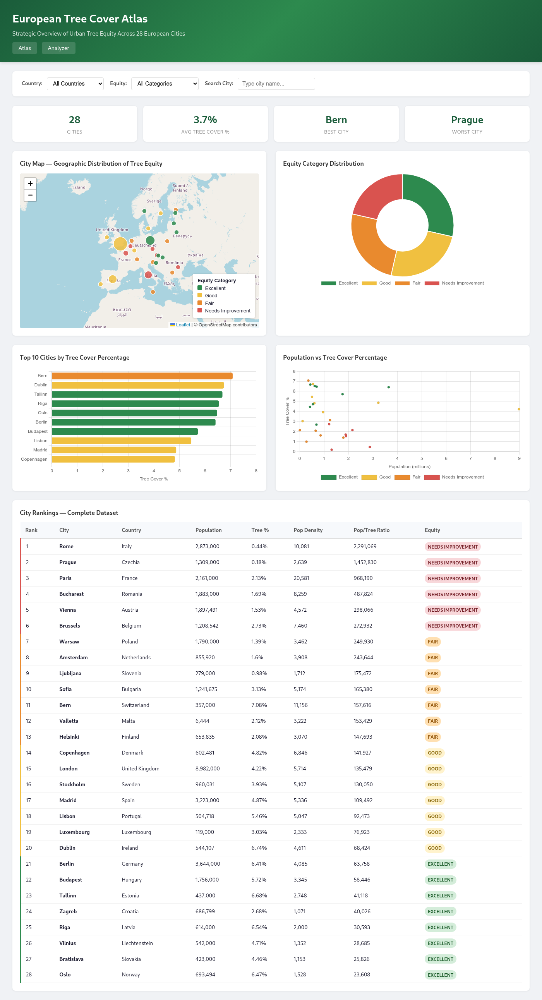
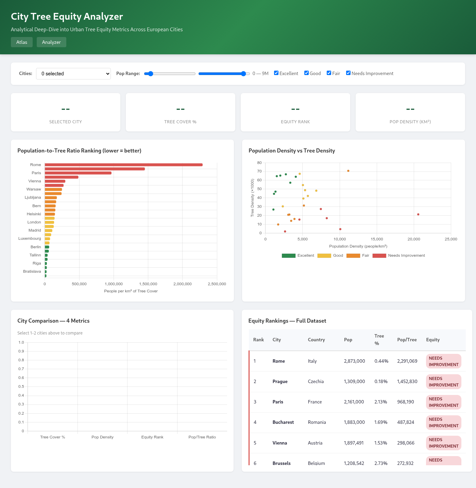

TreeEquity
Overview
Built for a knowledge-extraction course, TreeEquity is a full data lifecycle project split into three capstones. The core question: how does urban tree canopy cover relate to population density — and what does that mean for tree equity — across European cities? Each capstone handed off its output to the next, ending in a working, interactive dashboard for exploring where Europe’s urban forests thrive and where they need investment.
Capstone 1 — Data collection & cleaning
A geospatial pipeline built with rasterio, fiona, and
shapely combining four sources: Eurostat NUTS population data, Copernicus
Tree Cover Density 2015 (20 m raster), Copernicus Urban Atlas 2021 Functional Urban
Area boundaries, and the NUTS2021 metropolitan-name mapping.
- Clipped the tree raster to each city’s actual FUA boundary (not a fixed buffer) to compute tree cover in km² and %.
- Normalized city names (e.g. Wien → Vienna) to match NUTS codes with FUA polygons.
- Loaded 212 regions; extracted tree-cover data for 89 with FUA matches — in about 10 minutes.
Capstone 2 — Database design
The collected data became a normalized (3NF) SQLite schema separating administrative
units, physical measurements, and derived metrics across 8 core tables: countries,
regions, cities, urban_trees, urban_trees_ua,
city_rankings, population_annual, and source_metadata.
- Documented conceptual, logical, and physical data models with ER diagrams (PlantUML + PNG).
- Explicit primary/foreign keys, NOT NULL, UNIQUE, and composite-UNIQUE constraints for integrity.
- Extended in Capstone 3 with a flat
city_tree_rankingsview — 98 cities across 42 countries.
Capstone 3 — Dashboard
Two Flask dashboards served from the SQLite database, using a JSON API and CDN chart libraries (Chart.js, Plotly, Leaflet).
- Dashboard 1 — European Tree Cover Atlas (strategic overview): Leaflet map with equity-colored markers, summary stat cards, equity donut, top-10 bar chart, population-vs-tree scatter + box plot, and a sortable full table.
- Dashboard 2 — City Tree Equity Analyzer (analytical deep-dive): KPI cards, pop-to-tree ratio horizontal bar, density scatter, side-by-side city comparison, and a color-coded equity table.
- Cities are tiered by quartile breaks of the population-to-tree ratio (people per km² of tree cover): Excellent · Good · Fair · Needs Improvement.
- 7 API endpoints power the charts;
db_connection.pyuses WAL journaling and a row factory.


Key findings
- 98 cities analyzed across 42 European countries.
- Average tree cover among cities: 3.27%; best city Vatican City (16.90%), worst Reggio Calabria (0.01%).
- The dataset grew from 30 cities (Capstone 2) to 98 (Capstone 3).
Tech & Approach
The stack spans the full data lifecycle. Capstone 1: Python, rasterio, fiona, numpy, pandas, shapely. Capstone 2: SQLite 3 with a normalized 3NF schema and PlantUML ER diagrams. Capstone 3: Flask + sqlite3 backend, HTML5/CSS3 front end, and Chart.js, Plotly, and Leaflet for visualization.
Outcome
TreeEquity demonstrates the complete arc from raw open data to a deployable analytical tool: satellite imagery and official statistics converted into a clean database, then surfaced in dashboards built for two audiences — planners needing a strategic overview and researchers wanting to compare cities and test hypotheses about density and canopy.